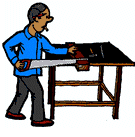

|  | |
Wallace Brown (a.k.a. Woodcutter Wally) works at Lloyds' Lumberyard. His main job is to cut long boards into shorter pieces, according to the needs of the customers.He needs your help, however, on his latest task, as solving math problems is not his strongest talent.
A customer brings in some boards, all 4.6 m in length and requests to have them cut into 2 sizes - 40 cm and 70 cm. The number of the 70-cm pieces should be twice that of the 40-cm pieces.
But, there's a catch: no wood must be wasted. All the lumber must be used in the final result.
How does Wally accomplish this?
Oh, one more fact is necessary. The customer has brought in between 25 and 30 boards.
Extra: Why is it necessary to state the fact about 25-30 boards, so that this problem can have a unique answer?
[Note: this is an adaptation of a problem sent by Wanting Zhong, an 11-yr-old girl from China.]
| Comments? Send e-mail. | Back to top | Go back to Home Page | Go back to Contents |